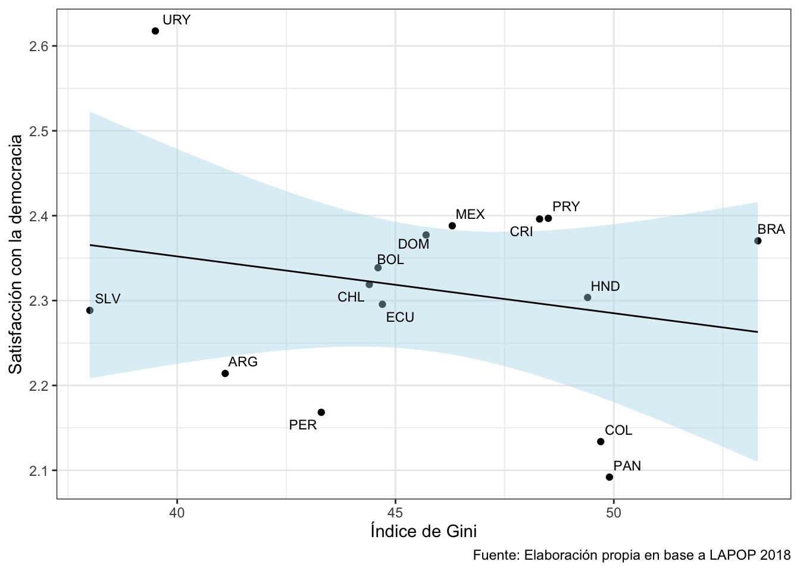
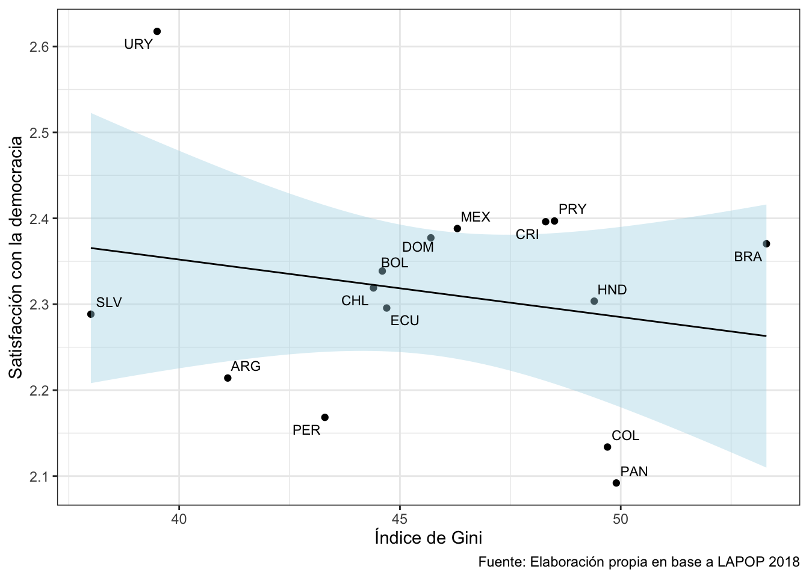

pacman::p_load(tidyverse, # Manipulacion datos
sjmisc, # Descriptivos
kableExtra, #Tablas
ggrepel) # Graficos
options(scipen = 999) # para desactivar notacion cientifica
rm(list = ls()) # para limpiar el entorno de trabajoUntitled
Comencemos por preparar nuestros datos. Iniciamos cargando las librerías necesarias.
Cargamos los datos alojados en la carpeta Input > datos
g1 <- lapop %>%
group_by(pais) %>%
summarise(satis_m = mean(pn4, na.rm = T),
gini_m = mean(gini, na.rm = T))
g1# A tibble: 15 × 3
pais satis_m gini_m
<chr> <dbl> <dbl>
1 ARG 2.21 41.1
2 BOL 2.34 44.6
3 BRA 2.37 53.3
4 CHL 2.32 44.4
5 COL 2.13 49.7
6 CRI 2.40 48.3
7 DOM 2.38 45.7
8 ECU 2.30 44.7
9 HND 2.30 49.4
10 MEX 2.39 46.3
11 PAN 2.09 49.9
12 PER 2.17 43.3
13 PRY 2.40 48.5
14 SLV 2.29 38
15 URY 2.62 39.5Ahora, graficamos esta asociación en un objeto llamado grafico1.
grafico1 <- ggplot(data = g1,
mapping = aes(x = gini_m, y = satis_m, label = pais)) +
geom_point() +
geom_smooth(method = "lm",colour = "black",fill="lightblue",size=0.5) +
geom_text_repel(size=3, show.legend = FALSE) +
labs(x = "Índice de Gini",
y = "Satisfacción con la democracia",
caption = "Fuente: Elaboración propia en base a LAPOP 2018") +
theme_bw()
grafico1
grafico1
En este codifo bla bla Figure 1
tabla1 <- lapop %>%
group_by(pais, it1) %>% # agrupamos por pais y variable
summarise(n = n()) %>% # contamos por categ de respuesta
mutate(prop = round((n / sum(n)) * 100, 2)) %>% # porcentaje
na.omit() %>% # borramos NA
pivot_wider(id_cols = pais, names_from = it1, values_from = prop) # convertimos a formato anchotabla1 %>%
kableExtra::kable(format = "html",
align = "c",
col.names = c("País", "Nada confiable", "Poco confiable", "Algo confiable", "Muy confiable")) %>%
kableExtra::kable_classic(full_width = F, position = "left", font_size = 12) %>%
kableExtra::add_footnote(label = "Fuente: Elaboración propia en base a LAPOP 2018.")?(caption)
| País | Nada confiable | Poco confiable | Algo confiable | Muy confiable |
|---|---|---|---|---|
| ARG | 7.98 | 21.66 | 45.09 | 23.23 |
| BOL | 13.56 | 40.49 | 31.87 | 11.59 |
| BRA | 12.88 | 45.39 | 19.76 | 19.76 |
| CHL | 10.56 | 23.44 | 40.54 | 24.60 |
| COL | 9.14 | 25.74 | 34.40 | 28.98 |
| CRI | 8.53 | 22.58 | 34.64 | 32.25 |
| DOM | 11.28 | 29.02 | 31.27 | 24.01 |
| ECU | 11.68 | 37.83 | 32.22 | 17.29 |
| HND | 14.04 | 28.65 | 22.82 | 29.29 |
| MEX | 11.20 | 33.16 | 31.46 | 20.70 |
| PAN | 14.24 | 34.00 | 31.49 | 18.47 |
| PER | 14.92 | 42.34 | 31.23 | 10.59 |
| PRY | 9.70 | 24.09 | 35.64 | 26.86 |
| SLV | 8.60 | 32.30 | 26.27 | 29.19 |
| URY | 7.08 | 18.72 | 43.77 | 27.07 |
| a Fuente: Elaboración propia en base a LAPOP 2018. |
: My Caption {#tbl-confi}
En la ?@tbl-confi vemos que